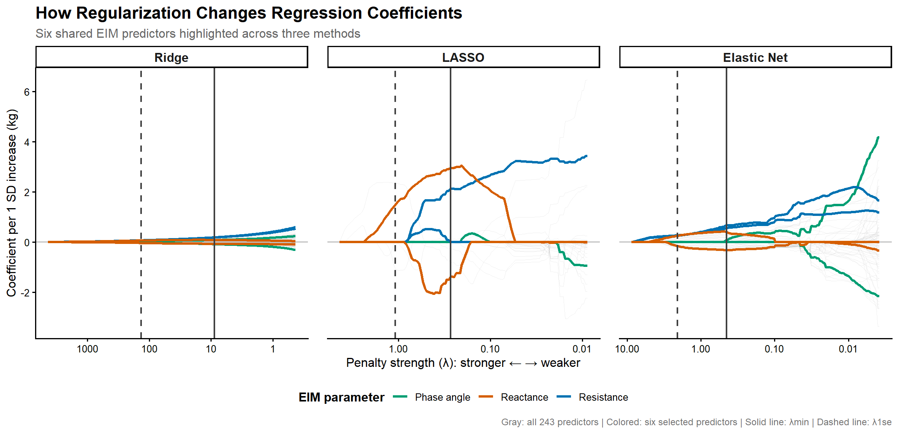
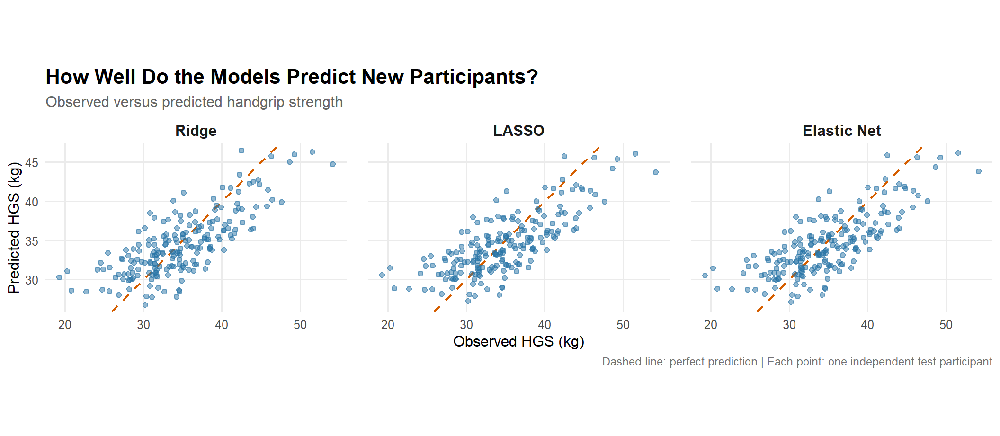

Title: Regularization and Variable Selection via the Elastic Net
Authors: Hui Zou and Trevor Hastie (2005)
Journal: Journal of the Royal Statistical Society: Series B (Statistical Methodology), 67(2), 301–320.
Research Problem: How can we build accurate and interpretable regression models when we have many highly correlated predictors? Ridge handles correlated predictors but does not perform variable selection, while LASSO selects variables but may discard important correlated predictors.
7.2 Motivation: Why Elastic Net?
Zou and Hastie (2005) introduced Elastic Net to address some limitations of existing regularization methods, particularly when dealing with many highly correlated predictors.
At the time, two popular approaches were Ridge regression and LASSO. Ridge could handle correlated predictors by shrinking their coefficients, but it generally kept all predictors in the model. LASSO could also remove predictors by setting their coefficients to zero, making models easier to interpret.
However, LASSO had three important limitations:
High-dimensional data (p > n): The standard LASSO solution could select at most n predictors, even when more variables might contain useful information.
Correlated predictors: When several predictors were strongly correlated, LASSO tended to select one and discard the others.
Prediction performance: In some settings with highly correlated predictors, Ridge could predict better than LASSO.
The authors proposed Elastic Net, which combines L1 (LASSO) and L2 (Ridge) regularization to perform variable selection while encouraging correlated predictors to be retained together.
7.3 Regularization Methods
All three methods aim to find regression coefficients that minimize prediction error, but they differ in how they penalize the coefficients. Regularization introduces some bias to reduce variance, potentially improving predictions on new data.
\(\hat{\beta}_{\text{Ridge}}\): Estimated coefficients that minimize the objective.
\(\lambda_2\): Strength of the Ridge penalty.
\(\beta_j\): Coefficient of predictor \(j\).
\(p\): Number of predictors.
\(\sum\beta_j^2\): L2 penalty (sum of squared coefficients).
Ridge shrinks coefficients toward zero, making their estimates more stable when predictors are highly correlated. However, it generally keeps all predictors in the model.
\(\hat{\beta}_{\text{LASSO}}\): Estimated coefficients that minimize the objective.
\(\lambda_1\): Strength of the LASSO penalty.
\(|\beta_j|\): Absolute value of coefficient \(j\).
\(\sum|\beta_j|\): L1 penalty (sum of absolute coefficients).
LASSO shrinks coefficients and can set some exactly to zero, effectively selecting variables. However, when predictors are highly correlated, it may select only one and discard the others.
7.3.3 Naïve Elastic Net (L1 + L2)
Zou and Hastie initially proposed combining the two penalties:
The two penalties are combined in the same optimization problem.
Elastic Net combines LASSO’s variable selection with Ridge’s ability to handle correlated predictors. This encourages strongly correlated variables to have similar coefficients, known as the grouping effect.
However, the authors found that this initial formulation could shrink coefficients excessively. They therefore introduced a corrected Elastic Net estimator.
7.4 The Grouping Effect
One of the main advantages of Elastic Net is the grouping effect, where strongly correlated predictors tend to receive similar coefficients and may be selected together.
LASSO, on the other hand, may select only one predictor from a correlated group, even when several contain similar information.
7.4.1 Mathematical Intuition
Suppose two predictors are identical (\(X_1 = X_2\)), and their coefficients must add up to 2 to produce the same predictions.
Consider two possible solutions:
Coefficients
L1 Penalty (LASSO)
L2 Penalty (Ridge)
\(\beta_1=2,\ \beta_2=0\)
\(|2|+|0|=2\)
\(2^2+0^2=4\)
\(\beta_1=1,\ \beta_2=1\)
\(|1|+|1|=2\)
\(1^2+1^2=2\)
Both solutions give identical predictions because the predictors are identical.
LASSO gives the same penalty to both solutions, so it does not necessarily prefer sharing the coefficients.
Elastic Net, through its L2 component, prefers the second solution because the squared coefficients have a smaller sum. This encourages the correlated predictors to receive similar coefficients.
7.4.2 Why Does This Matter?
Imagine predicting disease risk using gene-expression data. Genes involved in the same biological pathway may be highly correlated because they participate in related biological processes.
LASSO might select only one gene from a correlated group, while Elastic Net may retain several through its grouping effect. This can help preserve information about related genes rather than focusing on a single predictor. However, selecting these genes does not necessarily mean they are biologically important or causally related to the disease.
7.5 From Naïve to Corrected Elastic Net
The authors found that their initial method, called naïve Elastic Net, could shrink coefficients too much because it applied both Ridge (L2) and LASSO (L1) penalties. This double shrinkage introduced unnecessary bias and could reduce prediction accuracy.
To address this, they proposed a correction that rescales the estimated coefficients:
\(I_p\): Identity matrix with \(p\) rows and columns.
\(0_p\): Vector of \(p\) zeros.
\(X^*,y^*\): Artificially augmented data.
By adding these artificial observations, the Elastic Net problem can be solved using a modified LASSO algorithm.
Why is this useful?
It allows efficient calculation of coefficient paths across penalty values.
It enables Elastic Net to select more than \(n\) predictors when \(p>n\).
It supports early stopping to reduce computational effort.
The authors also used 10-fold cross-validation to select the tuning parameters based on prediction error.
7.6.2 Connection to Modern R Implementation
Today, Elastic Net can be fitted using glmnet in R, which uses coordinate descent rather than the original LARS-EN algorithm. Both approaches fit models with combined L1 and L2 penalties, but use different computational techniques.
7.7 Results and Findings
Zou and Hastie evaluated Elastic Net using real datasets and simulation experiments to determine whether it improved prediction accuracy and variable selection compared with existing methods.
7.7.1 Prostate Cancer Data
The authors used eight clinical predictors to estimate prostate-specific antigen (PSA) levels, with 67 observations for training and 30 for testing.
Method
Test MSE
OLS
0.586
Ridge
0.566
LASSO
0.499
Naïve Elastic Net
0.566
Elastic Net
0.381
Finding. Elastic Net achieved the lowest test prediction error, approximately 24% lower than LASSO. It also retained only five of the eight predictors, showing that it could improve prediction while maintaining a relatively simple model.
7.7.2 Simulation Study
The authors tested four simulated scenarios with different patterns of correlated and informative predictors. The fourth scenario specifically included groups of highly correlated variables.
Elastic Net outperformed LASSO in all four simulations, reducing median test MSE by approximately 13–27%.
Finding. Elastic Net generally provided better prediction and selected correlated predictors more effectively than LASSO. However, Ridge achieved the lowest prediction error in two simulations, showing that Elastic Net was not always the best-performing method.
7.7.3 Leukemia Gene-Expression Data
The authors also tested Elastic Net on a dataset containing 7,129 genes and 72 samples, using 38 samples for training and 34 for testing.
Elastic Net selected 45 genes and correctly classified all 34 test samples.
Finding. This demonstrated that Elastic Net could select more predictors than the number of training observations (\(p > n\)), overcoming an important limitation of the standard LASSO solution path.
7.8 Strengths and Limitations
Strengths
Combines variable selection with more stable estimation of correlated predictors.
Introduces the grouping effect, which is particularly useful for high-dimensional biological data.
Demonstrates the method using simulations and real datasets, with improvements in prediction accuracy over LASSO.
Limitations
Elastic Net does not always outperform Ridge or LASSO. Performance depends on the data.
The method requires tuning two penalty parameters, typically through cross-validation.
Selecting correlated predictors does not necessarily mean they are biologically important or causally related to the outcome.
7.9 Conclusion
Zou and Hastie (2005) showed that combining L1 and L2 regularization can address important limitations of LASSO, particularly when predictors are highly correlated. Beyond prediction accuracy, Elastic Net provides a way to select groups of related predictors, making it especially useful for high-dimensional datasets.
7.10 Computational Exploration: A Physiological Example
7.10.1 Background
Electrical Impedance Myography (EIM) is a non-invasive technique that assesses the electrical properties of muscle tissue by applying low-intensity electrical currents at different frequencies.
EIM provides three commonly used measurements:
Resistance (R): The opposition of tissue to electrical current.
Reactance (Xc): The capacitive component of impedance, influenced partly by cell membranes.
Phase angle (PhA): The angle between resistance and reactance, calculated as \(\arctan(Xc/R)\) and expressed in degrees.
Because these measurements are obtained across multiple frequencies, many of the resulting features are highly correlated. For example, resistance measured at 50 kHz may contain information similar to resistance measured at 51 kHz. Furthermore, phase angle is mathematically related to both resistance and reactance.
This makes EIM an interesting example of the multicollinearity and variable-selection problems discussed by Zou and Hastie (2005).
For our exploration, we simulate EIM-like measurements across 81 frequencies (20–10,000 kHz) to predict handgrip strength (HGS). We use 60 training participants and 200 independent test participants.
With three measurements per frequency, we obtain 243 predictors for only 60 training observations (\(p>n\)), creating a high-dimensional regression problem.
Our goal is to compare how Ridge, LASSO and Elastic Net handle these correlated predictors and how accurately they predict HGS in unseen participants.
7.10.2 Data Simulation
We simulate EIM measurements across 81 frequencies (20–10,000 kHz) using smooth, frequency-dependent curves. The dataset contains 60 training participants, 200 independent test participants, and 243 predictors (81 frequencies × 3 EIM parameters). All observations are simulated and do not represent real participant data.
In the code below: We generate a synthetic dataset to show regularization in a high-dimensional setting. Five participant-level factors determine the shapes and amplitudes of the EIM spectra, creating strong correlations across frequencies. Handgrip strength is simulated using two of these factors and random noise. We then randomly assign 60 participants to training and reserve 200 independent participants for evaluating prediction accuracy. A fixed random seed ensures reproducibility.
Before fitting regression models, we examine how resistance, reactance, and phase angle vary across frequencies. We visualize the individual participant curves alongside the mean and the 10th–90th percentile range to explore both the overall spectral patterns and between-participant variation.
Figure 7.1: Simulated EIM spectra across frequencies. Thin lines represent individual training participants (n = 60), colored lines represent the mean, and shaded regions represent the 10th–90th percentile.
7.10.4 Exploring Correlations Between EIM Features
We next explore the relationships between predictors using a triangular correlation matrix. The heatmap displays Pearson correlation coefficients across the 60 training participants. Red indicates positive correlations, blue indicates negative correlations, and lighter colors indicate weaker relationships.
Figure 7.2: Exploratory Pearson correlation matrix of 12 frequency-specific EIM features from the simulated training data (n = 60).
These relationships are relevant for variable selection. When several predictors are strongly correlated, LASSO may retain only a subset, while Elastic Net encourages correlated predictors to receive similar coefficients.
The correlation matrix displays a selected subset of 12 features for readability. All 243 predictors are retained for model fitting.
7.10.5 Fitting Ridge, LASSO and Elastic Net
We now compare three regularization methods using the same training dataset. All models are fitted using the glmnet package, which combines L1 and L2 penalties through the parameter \(\alpha\):
Ridge (\(\alpha=0\)): Uses only L2 regularization.
LASSO (\(\alpha=1\)): Uses only L1 regularization.
Elastic Net (\(\alpha=0.5\)): Combines L1 and L2 regularization equally.
For each method, we use 10-fold cross-validation to select the penalty strength \(\lambda\) that minimizes mean squared prediction error (MSE). The same folds are used across models for a consistent comparison, and predictors are standardized before fitting.
The independent test dataset is not used during model selection.
In the code below: foldid assigns participants to the same cross-validation folds across methods. The arguments nlambda = 200 and lambda.min.ratio = 1e-4 define a broad search over penalty strengths, while type.measure = "mse" specifies the prediction error used for tuning. The cv.glmnet() function fits each model across these penalty values and calculates its cross-validation error.
Show code
library(glmnet)set.seed(6400)# Use identical 10-fold CV assignments for all modelsfold_id <-sample(rep(1:10, length.out = n_train))# alpha controls the balance between L1 and L2 penaltiesalphas <-c("Ridge"=0,"LASSO"=1,"Elastic Net"=0.5)# Fit each model and select lambda by 10-fold CVcv_models <-lapply(alphas, function(a) {cv.glmnet(x = x_train,y = y_train,alpha = a,foldid = fold_id,nlambda =200,lambda.min.ratio =1e-4,standardize =TRUE,type.measure ="mse" )})
7.10.6 Cross-Validation and Lambda Selection
The amount of regularization is controlled by \(\lambda\). Larger values impose stronger penalties, shrinking the regression coefficients more aggressively. However, excessive regularization can also increase prediction error.
To select \(\lambda\), we examine the 10-fold cross-validation error across different penalty strengths for each model.
We compare two common choices:
\(\lambda_{\min}\): The penalty with the lowest mean cross-validation error.
\(\lambda_{1se}\): The largest penalty whose mean CV error is within one standard error of the minimum. This provides a more strongly regularized model with comparable estimated performance.
The code extracts the mean cross-validation error (cvm) and its estimated standard error (cvsd) across the tested penalty values (lambda). It also identifies the penalties selected by the minimum-error and one-standard-error rules (lambda.min and lambda.1se). These results are plotted separately for each method, with the shaded region showing ±1 standard error around the mean cross-validation error.
Figure 7.3: Ten-fold cross-validation error across penalty strengths for Ridge, LASSO and Elastic Net.
Cross-validation reveals different relationships between penalty strength and prediction error. Ridge exhibits a broad minimum at intermediate penalty values, illustrating how both insufficient and excessive regularization can increase prediction error. In contrast, LASSO and Elastic Net show relatively stable errors at smaller penalties, followed by increasing errors under stronger regularization.
We use \(\lambda_{\min}\) for the model comparisons that follow. The one-standard-error choice (\(\lambda_{1se}\)) illustrates how stronger regularization may be preferred when a simpler model is desirable.
10-fold cross-validation | 60 training participants
Method
α
Selected λ
CV MSE (kg²)
Nonzero predictors
Ridge
0.0
8.782
17.63
243
LASSO
1.0
0.270
17.48
8
Elastic Net
0.5
0.448
17.52
36
7.10.8 Coefficient Paths: How Regularization Changes the Model
The coefficient paths show how regression coefficients change as the regularization penalty (\(\lambda\)) varies. Unlike the cross-validation curves, which measure prediction error, these plots illustrate how each method shrinks or eliminates predictors.
To keep the figure readable, we highlight six predictors: the two with the largest absolute standardized coefficients within each EIM measurement type, considering all three fitted models at their selected penalties. The same six predictors are highlighted across Ridge, LASSO and Elastic Net, while the remaining coefficient paths appear in faint gray. All 243 predictors are included in model fitting.
The code extracts coefficient estimates across the penalty sequence from glmnet.fit$beta. We multiply each coefficient by its predictor’s training-set standard deviation to express effects on a comparable scale. The selected_ids object identifies the six highlighted predictors, while lambda.min and lambda.1se indicate the penalties chosen by cross-validation.
Show code
library(ggplot2)library(dplyr)# Standardize coefficient scale (per 1 SD of each predictor)predictor_sd <-apply(x_train, 2, sd)# Identify informative predictors across all three methodsimportance <-sapply(cv_models, function(model) { beta <-as.numeric(coef(model, s ="lambda.min"))[-1]abs(beta * predictor_sd)})# Select two predictors per EIM parameter, consistently across methodsgroups <-list("Resistance"=seq_len(nf),"Reactance"= nf +seq_len(nf),"Phase angle"=2* nf +seq_len(nf))selected_ids <-unlist(lapply(groups, function(ids) { scores <-apply(importance[ids, , drop =FALSE], 1, max) ids[order(scores, decreasing =TRUE)[1:2]]}), use.names =FALSE)# Extract coefficient paths for ALL predictorsall_path_data <-bind_rows(lapply(names(cv_models), function(method) { fit <- cv_models[[method]]$glmnet.fit beta <-as.matrix(fit$beta)data.frame(Method = method,FeatureID =rep(seq_len(nrow(beta)), each =ncol(beta)),Lambda =rep(fit$lambda, times =nrow(beta)),Coefficient =as.vector(t(beta)) *rep(predictor_sd, each =ncol(beta)) )}))# Extract coefficient paths for the SAME six predictorsselected_path_data <-bind_rows(lapply(names(cv_models), function(method) { fit <- cv_models[[method]]$glmnet.fit beta <-as.matrix(fit$beta)bind_rows(lapply(selected_ids, function(j) {data.frame(Method = method,Feature =colnames(x_train)[j],FeatureID = j,Lambda = fit$lambda,Coefficient =as.numeric(beta[j, ]) * predictor_sd[j],Parameter =if (j <= nf) {"Resistance" } elseif (j <=2* nf) {"Reactance" } else {"Phase angle" } ) }))}))# Penalties selected by cross-validationlambda_lines <-bind_rows(lapply(names(cv_models), function(method) {data.frame(Method = method,Lambda =c( cv_models[[method]]$lambda.min, cv_models[[method]]$lambda.1se ),Choice =c("Minimum CV error", "1-SE rule") )}))# Stronger regularization on the left, weaker on the rightall_path_data$X <--log10(all_path_data$Lambda)selected_path_data$X <--log10(selected_path_data$Lambda)lambda_lines$X <--log10(lambda_lines$Lambda)# Order panelsall_path_data$Method <-factor( all_path_data$Method,levels =c("Ridge", "LASSO", "Elastic Net"))selected_path_data$Method <-factor( selected_path_data$Method,levels =c("Ridge", "LASSO", "Elastic Net"))lambda_lines$Method <-factor( lambda_lines$Method,levels =c("Ridge", "LASSO", "Elastic Net"))ggplot() +geom_hline(yintercept =0,color ="grey65",linewidth =0.5 ) +geom_line(data = all_path_data,aes(x = X, y = Coefficient, group =interaction(Method, FeatureID)),color ="grey75",alpha =0.25,linewidth =0.35 ) +geom_line(data = selected_path_data,aes(x = X, y = Coefficient, color = Parameter, group = Feature),linewidth =1.1 ) +geom_vline(data =filter(lambda_lines, Choice =="Minimum CV error"),aes(xintercept = X),color ="grey25",linewidth =0.8 ) +geom_vline(data =filter(lambda_lines, Choice =="1-SE rule"),aes(xintercept = X),color ="grey25",linetype ="dashed",linewidth =0.8 ) +facet_wrap(~Method,nrow =1,scales ="free_x" ) +scale_x_continuous(labels =function(x) {format(signif(10^(-x), 2), scientific =FALSE, trim =TRUE) } )+scale_color_manual(values =c("Resistance"="#0072B2","Reactance"="#D55E00","Phase angle"="#009E73" ),name ="EIM parameter" ) +labs(title ="How Regularization Changes Regression Coefficients",subtitle ="Six shared EIM predictors highlighted across three methods",x ="Penalty strength (λ): stronger ← → weaker",y ="Coefficient per 1 SD increase (kg)",caption ="Gray: all 243 predictors | Colored: six selected predictors | Solid line: λmin | Dashed line: λ1se" ) +theme_classic(base_size =12) +theme(plot.title =element_text(face ="bold", size =16),plot.subtitle =element_text(color ="grey40"),strip.text =element_text(face ="bold", size =12),panel.grid.minor =element_blank(),panel.grid.major.x =element_blank(),panel.spacing = grid::unit(1.3, "lines"),legend.position ="bottom",legend.title =element_text(face ="bold"),plot.caption =element_text(color ="grey45", size =9) )

Figure 7.4: Coefficient paths for six selected EIM predictors across Ridge, LASSO, and Elastic Net. Gray lines show all 243 predictors.
Interpretation. As the penalty becomes stronger (moving left), Ridge progressively shrinks coefficients toward zero, whereas LASSO and Elastic Net can set coefficients exactly to zero. Elastic Net’s L2 component also encourages correlated predictors to have similar coefficients, although this grouping behavior must be evaluated using the selected features rather than inferred from these paths alone.
The solid vertical line marks \(\lambda_{\min}\), while the dashed line indicates the more strongly regularized \(\lambda_{1se}\) solution.
7.10.9 Variable Selection and the Grouping Effect
One of the main motivations for Elastic Net is its ability to retain groups of correlated predictors, whereas LASSO may select only a few representatives.
To explore this, we compare which EIM features receive nonzero coefficients at the cross-validated penalty (\(\lambda_{\min}\)). Each point represents a retained predictor, positioned according to its measurement frequency. Point size indicates the absolute standardized coefficient, allowing us to distinguish the predictors with larger contributions to the fitted model.
The code extracts the coefficients estimated at \(\lambda_{\min}\) for LASSO and Elastic Net using coef(). Predictors with coefficients effectively equal to zero are excluded, leaving only the selected features. Coefficients are multiplied by each predictor’s standard deviation in the training data so their magnitudes can be compared on a common scale. We then plot the retained predictors by frequency and EIM measurement type.
Figure 7.5: EIM predictors retained by LASSO and Elastic Net at the cross-validated penalty. Point size represents absolute standardized coefficient magnitude.
Interpretation. This figure shows the distribution of selected EIM predictors across frequencies. LASSO tends to produce a sparser solution, while Elastic Net can retain several correlated predictors from nearby frequency regions.
Selection of neighboring frequencies would be consistent with the grouping effect described by Zou and Hastie. However, retaining more predictors alone does not establish that Elastic Net performs better: predictive accuracy must also be assessed on the independent test set.
7.10.10 Predictive Performance on Independent Test Data
Cross-validation was used to select the regularization penalty for each model. However, the final comparison should evaluate predictions on data that were not used during model fitting or tuning.
We evaluate Ridge, LASSO and Elastic Net using the 200 independent simulated test participants. Predictive accuracy is assessed using mean squared error (MSE), root mean squared error (RMSE) and mean absolute error (MAE). MSE averages squared prediction errors, RMSE expresses the error in the original units (kg) while giving more weight to larger errors, and MAE measures the average absolute difference between predicted and observed handgrip strength. Lower values indicate better predictive performance.
In the code below: For each model, predict() generates handgrip-strength predictions using x_test, the independent test predictors. The argument s = "lambda.min" specifies that predictions should use the penalty selected during cross-validation. We then compare these predictions with the observed test values (y_test) and calculate MSE, RMSE, and MAE. The gt() package formats the results into a comparison table.
200 simulated participants excluded from model fitting and tuning
Method
MSE (kg²)
RMSE (kg)
MAE (kg)
Ridge
14.63
3.82
3.12
LASSO
14.97
3.87
3.16
Elastic Net
14.92
3.86
3.16
To visualize prediction accuracy, we plot observed against predicted handgrip strength for each method. The dashed diagonal line represents perfect agreement between observed and predicted values.
Show code
library(ggplot2)test_predictions$Model <-factor( test_predictions$Model,levels =c("Ridge", "LASSO", "Elastic Net"))ggplot( test_predictions,aes(x = Observed, y = Predicted)) +geom_abline(intercept =0,slope =1,linetype ="dashed",color ="#D55E00",linewidth =0.8 ) +geom_point(color ="#2874A6",alpha =0.50,size =1.8 ) +facet_wrap(~Model, nrow =1) +coord_equal() +labs(title ="How Well Do the Models Predict New Participants?",subtitle ="Observed versus predicted handgrip strength",x ="Observed HGS (kg)",y ="Predicted HGS (kg)",caption ="Dashed line: perfect prediction | Each point: one independent test participant" ) +theme_minimal(base_size =12) +theme(plot.title =element_text(face ="bold", size =16),plot.subtitle =element_text(color ="grey40"),strip.text =element_text(face ="bold", size =12),panel.grid.minor =element_blank(),panel.spacing = grid::unit(1.2, "lines"),plot.caption =element_text(color ="grey45", size =9) )

Figure 7.6: Observed versus predicted handgrip strength for 200 independent simulated test participants.
Interpretation. All three models show similar predictive performance on the independent test dataset. Predictions generally follow observed handgrip strength, although the models tend to overestimate lower values and underestimate higher values, suggesting some compression toward the mean. Ridge achieves a slightly lower test error, but the differences between methods are small. Thus, in this simulation, the main distinction between the methods lies in how they regularize coefficients and select correlated predictors rather than in predictive accuracy.
7.10.11 Discussion and Key Takeaways
This simulation illustrates how Ridge, LASSO and Elastic Net behave when the number of predictors exceeds the number of training observations (\(p > n\)) and many predictors are highly correlated.
Although all three methods achieved similar predictive performance on the independent test dataset, they differed considerably in how they handled the EIM features:
Ridge retained all 243 predictors, shrinking their coefficients without performing variable selection.
LASSO produced the sparsest model, retaining only 8 predictors at the cross-validated penalty.
Elastic Net retained 36 predictors, illustrating how combining L1 and L2 penalties can produce a less sparse solution than LASSO.
The variable-selection results are consistent with the motivation behind Zou and Hastie’s (2005) Elastic Net: rather than selecting only a few representatives from highly correlated variables, Elastic Net can retain multiple related predictors. However, selecting more predictors does not by itself prove a grouping effect and the selected features should not automatically be interpreted as biologically important.
On the independent test dataset, Ridge had the lowest RMSE (3.82 kg), followed by Elastic Net (3.86 kg) and LASSO (3.87 kg). These small differences do not establish a meaningful advantage for any method.
The main takeaway is that regularization is not only about minimizing prediction error. Different penalties produce different coefficient estimates and variable-selection patterns, even when predictive performance is nearly identical.